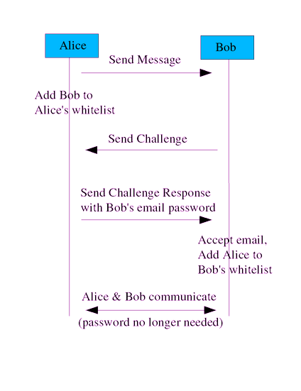

Home Page for "Countering Spam with Ham-Authenticated Email and the Guarded Email Protocol"
Spam (unsolicited bulk email, also called junk email or junk mail)
has become a serious problem on the Internet.
The paper available at this location,
"Countering Spam with Ham-Authenticated Email
and the Guarded Email Protocol", may be an answer to eliminating spam
permanently as a serious problem on the Internet.
I have described another anti-spam approach too, called hampasses;
for more information on hampasses, see my separate essay
Countering Spam Using Hampasses (Email Passwords).
Currently I use hampasses for my needs.
 The paper available at this site first defines
a spam threat model (involving Alice the legitimate sender, Bob the receiver,
and Spud the spammer).
This paper then identifies a major category of approaches
for countering spam: authenticating that email is ham (not spam)
before deliving the email to Bob.
It then defines a specific new authentication protocol,
called "guarded email", that should eliminate nearly all spam without throwing
away legitimate email and is extremely resistant to spammer counterattack.
In guarded email, received email is first checked by a "guard," and only
email that is authenticated as ham is delivered to the final recipient Bob.
Email is authenticated as ham by being signed or having a "from" address
already listed in Bob's whitelist, or by including a password (or other
authentication marker) selected by Bob. Otherwise, the email is not accepted; instead, Bob replies with a human-readable challenge
explaining how to determine the password. Any time Bob sends an email,
or receives an email with a correct password,
that address is added to the whitelist.
Techniques to eliminate problems with other challenge-response systems,
such as preventing loops, eliminating cleartext passwords,
and countering forged addresses, are also discussed.
The paper available at this site first defines
a spam threat model (involving Alice the legitimate sender, Bob the receiver,
and Spud the spammer).
This paper then identifies a major category of approaches
for countering spam: authenticating that email is ham (not spam)
before deliving the email to Bob.
It then defines a specific new authentication protocol,
called "guarded email", that should eliminate nearly all spam without throwing
away legitimate email and is extremely resistant to spammer counterattack.
In guarded email, received email is first checked by a "guard," and only
email that is authenticated as ham is delivered to the final recipient Bob.
Email is authenticated as ham by being signed or having a "from" address
already listed in Bob's whitelist, or by including a password (or other
authentication marker) selected by Bob. Otherwise, the email is not accepted; instead, Bob replies with a human-readable challenge
explaining how to determine the password. Any time Bob sends an email,
or receives an email with a correct password,
that address is added to the whitelist.
Techniques to eliminate problems with other challenge-response systems,
such as preventing loops, eliminating cleartext passwords,
and countering forged addresses, are also discussed.
The result is a simple protocol where strangers can communicate by answering
a simple human-readable challenge: untrusted users must "log in" to
send email to someone else. Guarded email can incorporate significant
new legal protections against spammers: it can include a legal contract for
sending email, require spammers to "break into" computers to spam,
and demonstrate opting out.
It can also incorporate optional cryptographic techniques
to counter spammer capturing of cleartext passwords, and can be implemented
incrementally by individuals across the Internet.
The protocol can be illustrated this way:

For more information, see my draft
paper, "Countering Spam with Ham-Authenticated Email
and the Guarded Email Protocol".
Brad Templeton has written a short article on proper principles
for challenge-response systems.
His article is more abstract, but it's
worth looking at as well.
There are lots of variations on this theme.
Bluebottle can use this approach,
using the recipient's full name as the "password".
There are a number of authentication-based approaches.
Unfortunately, authentication-based approaches only nibble at the problem,
since spammers can authenticate themselves too.
Authentication measures are really useful when coupled with
other measures, since as laws outlawing spam (suddenly I can track you
back and sue you) and making whitelisting approaches much
more secure.
PGP and S/MIME authenticate, but at a level far in excess to what
most people want, and don't handle strangers well (which is the
real problem with spam).
Sender Permitted From (SPF) is
is one of the most popular of these approaches.
Unfortunately, it only checks the envelope of email, not the
contents, so information that users actually see (like the "From:"
address) isn't actually protected by SPF. SPF badly breaks forwarding, too,
which makes it hard to deploy for many people.
Yahoo's DomainKeys approach signs email, and then recipients
can check if the signature is okay using DNS.
This approach makes sense, and is similar to
my
earlier proposal for secure email.
Microsoft has an approach it calls "email caller id", but
it appears that
Microsoft's approach is both patent-encumbered and nonstandard,
and thus unacceptable for use as an email standard.
There are various hashcash approaches,
which require a
sender to use compute time create a "stamp" that a receiver can check.
This developerworks article explains more.
When only used for email to strangers this actually looks
pretty good; see
Camram's Frequently Raised objections for arguments supporting it.
He also has a discussion on
why money stamps fail.
Yahoo has a list of anti-spam mechanisms you might find interesting.
Feel free to
look at my home page or my
essay on
stopping spam.